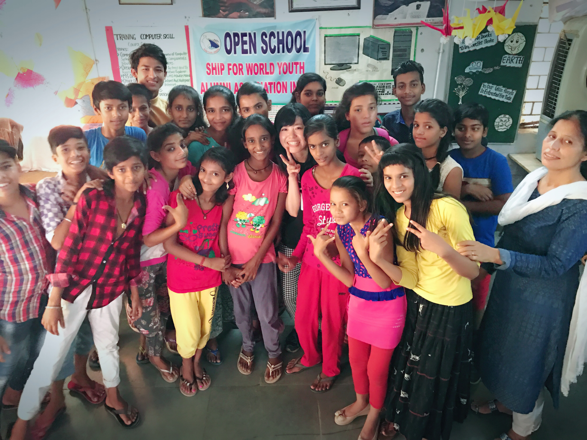
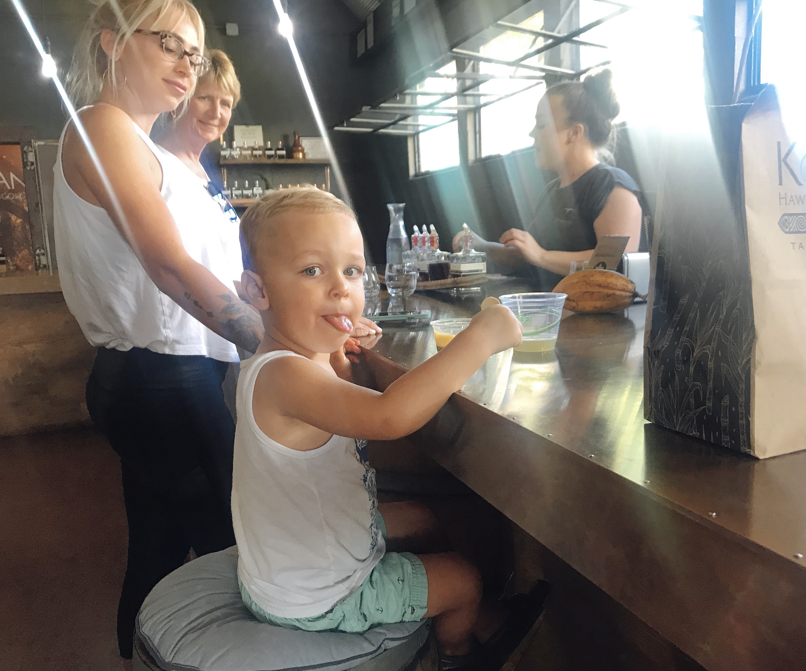

アメリカ合衆国 icon by Icons8
中国 icon by Icons8
フランス icon by Icons8
日本 icon by Icons8
My Journey Notes
トップ
My本棚
Myメモ
人生における「人・旅・本」との出会いを生み出し、
紡ぎ、残していきたいという思いで このメディアを運営していきます。
旅は人生を豊かにしてくれると信じています。
Our Network
 
My bookshelves
今日のメモ
Save
Clear
今日の出来事をシェアしよう！
Facebook
Tweets by yotty_masayo
Twitter
Tweets by yotty_masayo
Instagram
Tweets by yotty_masayo